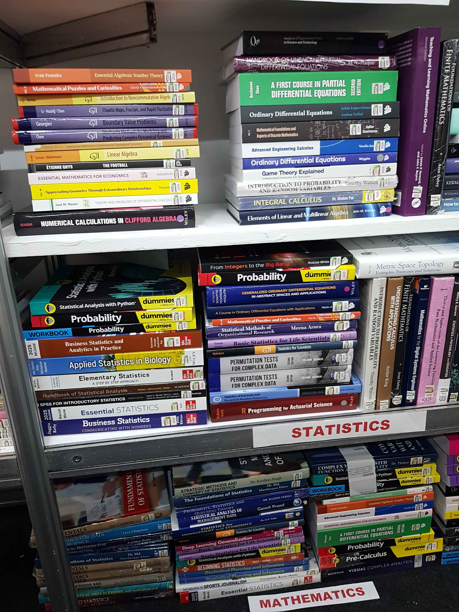
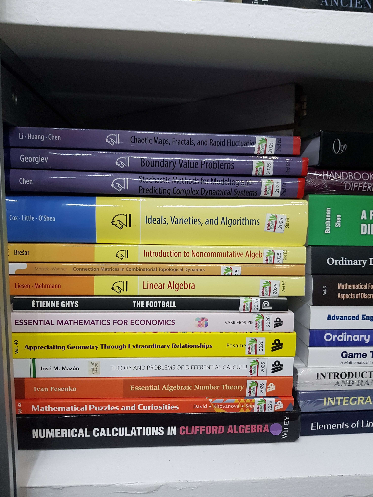
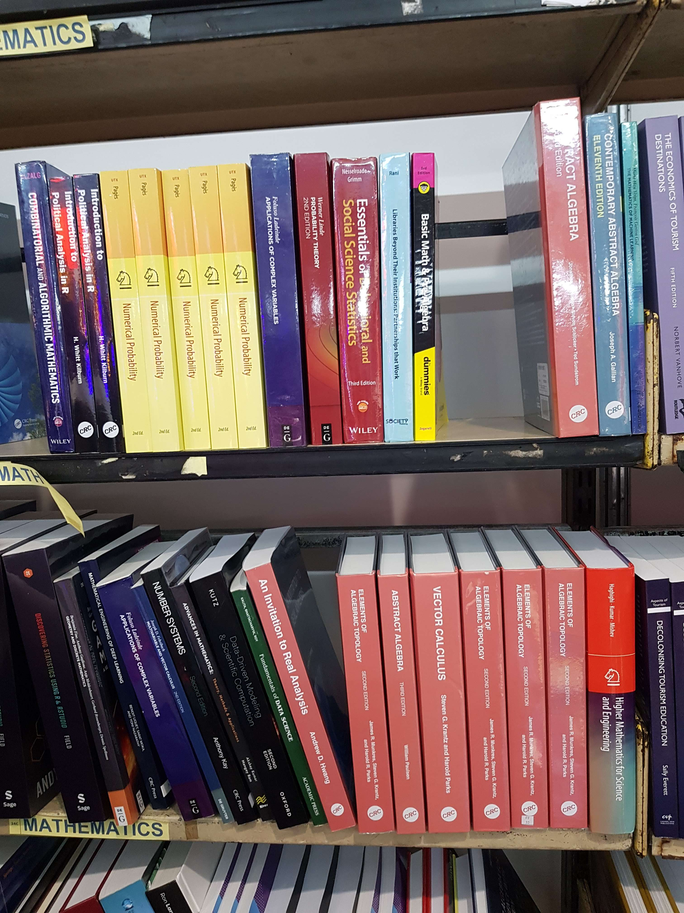

The 47th Manila International Book Fair was held from September 9-13, 2026 at the SMX Convention Center. The Fair was open from 10 am to 8 pm. I was able to attend the fair on September 9.
Before the first day of MIBF, I made my preparations. I printed out a copy of the floor plan and the list of exhibitors from the official MIBF website.
To gain entry, one would also need passes to the Fair. Fortunately, National Book Store provided free printable passes through their Facebook page.
I printed five pages worth of passes since I had intended to attend the Fair for multiple days with my family.
The alarm clock on my phone usually sounds like:
That morning, I did not hear my alarm go off... since I had forgotten to set it the previous night.
Fortunately, I was able to arrive just around half an hour past opening.
My general strategy was to start exploring from the aisle furthest right, Aisle R. The aisles around that section mainly contained resellers of academic textbooks.
I spent quite a long time at that area looking at textbooks before I proceeded to the left.


